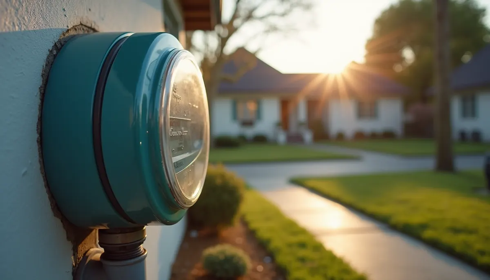
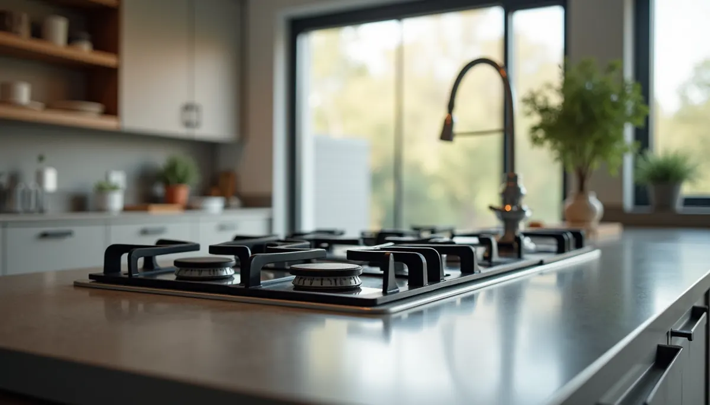

Natural gas appliances bring comfort and efficiency to your home. From inviting fireplaces to high-efficiency ranges, they can enhance the quality of your living space. However, before you eagerly add more gas-powered appliances, it’s important to grasp some lesser-known financial risks. As you increase the demand for natural gas in your home, you may encounter unexpected costs that could weigh heavy on your wallet.
Understanding the impact of these hidden costs is essential. More gas appliances do lead to more gas usage, but the underlying concerns extend beyond just the amount consumed. Let's explore why a rise in your home's gas demand can eventually lead to unanticipated expenses.
The Meter May Not Be Sized for Your New Demand
Every home is equipped with a natural gas meter sized to manage a specific gas flow volume. This capacity is determined by the total BTU (British Thermal Unit) rating of all installed or anticipated appliances. When introducing high-demand appliances, such as tankless water heaters or large gas ranges, you might exceed your current meter's capacity.
The Cost: If your gas utility finds that your meter is undersized, you'll likely bear the financial burden of an upgrade. This can involve costs ranging from a few hundred to several thousand dollars, depending on the installation's complexity. A larger meter not only accommodates your demand but also ensures reliability.
Supply Line Limitations
The gas lines that run from the street to your home must also be capable of supporting your increased gas flow needs. If these lines are not adequately sized, you may experience issues such as:
- Reduced Appliance Performance: New appliances might not receive enough gas, resulting in longer cooking times or complete functionality failures.
- Increased Energy Costs: If appliances operate inefficiently due to inadequate gas supply, you may face increased energy consumption and, consequently, higher bills.
As an illustration, homes may require a gas line capable of delivering 250,000 BTUs per hour if multiple high-demand devices are present. If your current line only supports 100,000 BTUs, this discrepancy can lead to suboptimal appliance function, costing you more in energy bills over time.
Increased Installation Costs
When adding new gas appliances, installation costs can rise significantly. If your infrastructure can't handle the demand, you will likely need more extensive plumbing work.
The Cost: Modifying or replacing existing gas lines can add significant expenses. For instance, hiring a licensed plumber might cost anywhere from $75 to $150 per hour, and if extensive work is involved, total costs can escalate quickly. Additionally, materials and permits may add hundreds of dollars to your budget.
Safety Inspections and Regulations
Increasing natural gas usage also necessitates ensuring that your gas system complies with local safety rules. Depending on your jurisdiction, this may include inspections to verify safe operation.
The Cost: Inspection costs can vary significantly by region. In some areas, you may pay as low as $50, while others could charge several hundred dollars. Non-compliance can lead to fines or, worse, hazardous situations.
Ongoing Maintenance
More appliances create a more complex system, requiring regular maintenance to ensure safety and efficiency. Natural gas appliances demand upkeep to operate properly and adhere to safety standards.
The Cost: Budgeting for maintenance is crucial. Routine checks for leaks can cost around $100, while professional servicing for cleaning and tuning can range from $150 to $300 annually. Neglecting maintenance could lead to higher unexpected repair costs or, in worst-case scenarios, appliance breakdowns.
Potential for Increased Insurance Premiums
As you introduce more natural gas appliances, your risk profile may change. Insurers may raise premiums, perceiving homes with multiple gas appliances as high-risk.
The Cost: This increase isn't a one-time fee. Over time, it could amount to an extra $10 to $30 monthly. It's wise to consult your insurance provider to see how new installations might affect your rates.
Making Informed Decisions
Adding natural gas appliances can greatly enhance your home’s convenience. However, the hidden costs associated with increasing your gas demand are significant. Understanding these implications is essential to avoid being caught off guard by unexpected costs.
Before moving forward with new appliance installations, consider consulting professionals like Angle Stop Plumbing to assess your home’s gas system. Their expertise can help you navigate potential risks associated with increased demand while providing guidance through the installation process.
By being aware of the hidden costs tied to natural gas appliances, you can make informed decisions that protect your budget. Stay proactive, plan wisely, and avoid surprises that could derail your financial plans.

